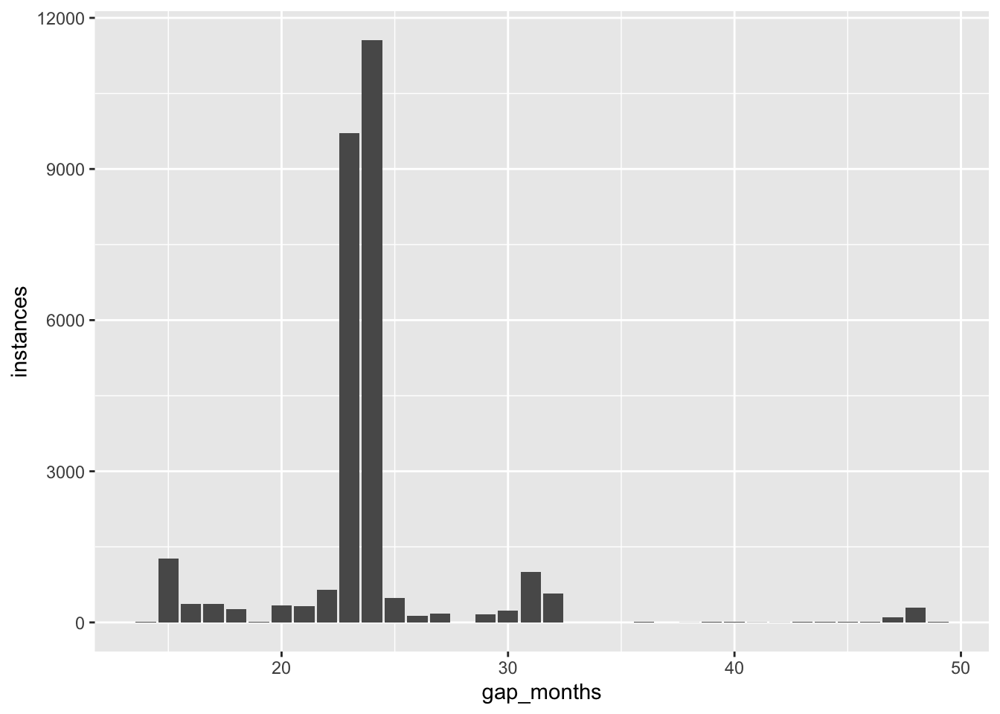

library(tidyverse)
library(DBI)
library(knitr)
library(dbplyr)9 Conclusion
pg <- dbConnect(RPostgres::Postgres(),
bigint = "integer",
check_interrupts = TRUE)9.1 Funnel Analysis
The issue described in this section of Tanimura (2021) is more difficult to get to using dbplyr. This seems the natural translation of the ideas represented in the SQL there.
users |>
left_join(step_one, by = "user_id",
keep = TRUE, suffix = c("", "_1")) |>
left_join(step_two, by = "user_id",
keep = TRUE, suffix = c("", "_2")) |>
summarize(all_users = n_distinct(user_id),
step_one_users = n_distinct(user_id_1),
step_two_users = n_distinct(user_id_2)) |>
mutate(pct_step_one = step_one_users/all_users,
pct_one_to_two = step_two_users / step_one_users)This yields the second of the two options provided, which seems to be the implicitly preferred one if we want to capture all step_two_users—even if some customers go directly to step_two—though it does make pct_one_to_two a bit more difficult to interpret in such cases.
9.2 Churn, Lapse, and Other Definitions of Departure
This query seems easier to follow with a separate window specification (WINDOW w AS) and using a CTE.
WITH gap_intervals AS (
SELECT id_bioguide, term_start,
lag(term_start) OVER w AS prev,
age(term_start, lag(term_start) OVER w) as gap_interval
FROM legislators_terms
WHERE term_type = 'rep'
WINDOW w AS (partition BY id_bioguide
ORDER BY term_start))
SELECT avg(gap_interval) AS avg_gap
FROM gap_intervals
WHERE gap_interval IS NOT NULL;| avg_gap |
|---|
| 2 years 2 mons 17 days 15:41:54.83805 |
Translating this query into dplyr is straightforward, with again most of the work being done in creation of gap_intervals. Note that we can refer to prev created in an earlier part of the mutate call in creating gap_interval. It seems that dbplyr detects this kind of situation and cleverly puts the calculation of prev into a subquery.
gap_intervals <-
legislators_terms |>
filter(term_type == 'rep') |>
group_by(id_bioguide) |>
window_order(term_start) |>
mutate(prev = lag(term_start),
gap_interval = age(term_start, prev)) |>
ungroup() |>
select(id_bioguide, term_start, prev, gap_interval)This makes it effectively a single line of code to transform the data into the average shown above.
gap_intervals |>
summarize(avg_gap = mean(gap_interval, na.rm = TRUE)) |>
kable()| avg_gap |
|---|
| 2 years 2 mons 17 days 15:41:54.83805 |
With gap_intervals in our pocket, the following query is much simpler than the SQL shown in the book.
gap_months <-
gap_intervals |>
mutate(gap_months = year(gap_interval) * 12 + month(gap_interval)) |>
count(gap_months, name = "instances") |>
arrange(gap_months) |>
ungroup()
gap_months |>
collect(n = 3) |>
kable()| gap_months | instances |
|---|---|
| 1 | 25 |
| 2 | 4 |
| 3 | 2 |
The following plot better matches what is shown in the book, where it seems the caption is incorrect.
gap_months |>
filter(between(gap_months, 14, 49)) |>
ggplot(aes(x = gap_months, y = instances)) +
geom_bar(stat = "identity")
latest_date <-
legislators_terms |>
summarize(max = max(term_start)) |>
pull()Warning: Missing values are always removed in SQL aggregation functions.
Use `na.rm = TRUE` to silence this warning
This warning is displayed once every 8 hours.intervals <-
legislators_terms |>
filter(term_type == 'rep') |>
group_by(id_bioguide) |>
summarize(max_date = max(term_start), .groups = "drop") |>
mutate(interval_since_last = age(latest_date, max_date))
intervals |>
mutate(years_since_last = year(interval_since_last)) |>
count(years_since_last) |>
arrange(years_since_last) |>
collect(n = 3) |>
kable()| years_since_last | n |
|---|---|
| 0 | 6 |
| 1 | 440 |
| 2 | 1 |
intervals |>
mutate(months_since_last = year(interval_since_last) * 12 +
month(interval_since_last)) |>
count(months_since_last, name = "reps") |>
mutate(status = case_when(months_since_last <= 23 ~ 'Current',
months_since_last <= 48 ~ 'Lapsed',
TRUE ~ 'Churned')) |>
group_by(status) |>
summarize(total_reps = sum(reps, na.rm = TRUE)) |>
kable()| status | total_reps |
|---|---|
| Churned | 10685 |
| Current | 446 |
| Lapsed | 105 |
9.3 Basket Analysis
This seems like a case where the programmability of R and the SQL-generation capability of dbplyr to address this more comprehensively. To make this tangible, let’s make some data and put it in the database:
purchases <- tribble(
~customer_id, ~product,
1, "bananas",
2, "apples",
2, "oranges",
3, "apples",
3, "oranges",
3, "bananas",
4, "bananas",
4, "apples",
4, "oranges",
4, "passionfruit") |>
mutate(customer_id = as.integer(customer_id)) |>
copy_inline(pg, df = _)Now, let’s make a function that performs as much of the analysis in the database as possible. The only data we bring into R relates to the distinct number of products purchased by customers. So let’s say some customers purchase one product, others two, three, or four, while some customers purchase six products. In this case n_prods = c(1, 2, 3, 4, 6) and that is the only data we need in R from the database. If p = 2 (i.e., we’re interested in product pairs), we then create all the combinations of 2 products for each value in n_prods. For a customer with one product, there is no pair. For a customer with two products, there is one pair. For a customer with three products, there are two pairs: {1, 2} and {2, 3}. These combinations are created in R and the resulting table (combos) is passed back to the database.
From there, everything is processed in the database.
In creating cust_prods, each unique product purchased by each customer is given a within-customer ID (prod_num) using the row_number() window function, and note is made of the number of unique products purchased by the customer (n_products). We then join cust_prods with combos using (customer_id, n_products) to create base, which contains customer IDs, as well as the “baskets” of products represented in the form of prod_num values stored in p_1, p_2, etc.
Next, we want to add the p actual products in each basket from cust_prods to the data stored in base. For example, we want to turn p_1 of 1 into product_1 of "apples". The get_prod() function does this for one product at a time and we use Reduce from base R to repeatedly apply this idea p times.
Finally, we collapse the product_i fields into a single basket field analogous to what is done in Tanimura (2021).
get_baskets <- function(df, p) {
get_combos <- function(n, p) {
if (n < p) return(NULL)
combos <- t(matrix(combn(sort(n), p), nrow = p))
colnames(combos) <- paste0("p_", 1:p)
combos <- as_tibble(combos)
combos$row_num <- 1:nrow(combos)
cross_join(tibble(n_products = n), combos)
}
n_prods <-
df |>
distinct(customer_id, product) |>
group_by(customer_id) |>
summarize(n_products = n()) |>
select(n_products) |>
distinct() |>
pull()
combos <-
n_prods |>
lapply(get_combos, p = p) |>
bind_rows() |>
copy_inline(pg, df = _)
cust_prods <-
df |>
group_by(customer_id) |>
window_order(product) |>
mutate(prod_num = row_number()) |>
ungroup() |>
group_by(customer_id) |>
mutate(n_products = n()) |>
ungroup()
base <-
cust_prods |>
select(customer_id, n_products) |>
distinct() |>
inner_join(combos, by = join_by(n_products)) |>
select(-n_products)
get_prod <- function(i) {
cust_prods |>
rename_with(function(x) paste0("p_", i), "prod_num") |>
inner_join(base) |>
rename_with(function(x) paste0("product_", i), "product") |>
select(customer_id, row_num, starts_with("product_"))
}
Reduce(inner_join, lapply(1:p, get_prod)) |>
arrange(customer_id, row_num) |>
mutate(basket =
sql(paste0("concat(", paste0("product_", 1:p, collapse = ", ', ', "), ")"))) |>
compute() |>
select(customer_id, basket)
}Now we can apply our function to our data to get two-item baskets.
pairs <- get_baskets(purchases, 2)
pairs |> kable()| customer_id | basket |
|---|---|
| 2 | apples, oranges |
| 3 | apples, bananas |
| 3 | apples, oranges |
| 3 | bananas, oranges |
| 4 | apples, bananas |
| 4 | apples, oranges |
| 4 | apples, passionfruit |
| 4 | bananas, oranges |
| 4 | bananas, passionfruit |
| 4 | oranges, passionfruit |
And we can identify the most popular baskets easily:
pairs |>
count(basket) |>
arrange(desc(n)) |>
kable()| basket | n |
|---|---|
| apples, oranges | 3 |
| bananas, oranges | 2 |
| apples, bananas | 2 |
| apples, passionfruit | 1 |
| oranges, passionfruit | 1 |
| bananas, passionfruit | 1 |
But the function also works for three-item baskets …
get_baskets(purchases, 3) |> kable()| customer_id | basket |
|---|---|
| 3 | apples, bananas, oranges |
| 4 | apples, bananas, oranges |
| 4 | apples, bananas, passionfruit |
| 4 | apples, oranges, passionfruit |
| 4 | bananas, oranges, passionfruit |
… and four-item baskets too.
get_baskets(purchases, 4) |> kable()| customer_id | basket |
|---|---|
| 4 | apples, bananas, oranges, passionfruit |